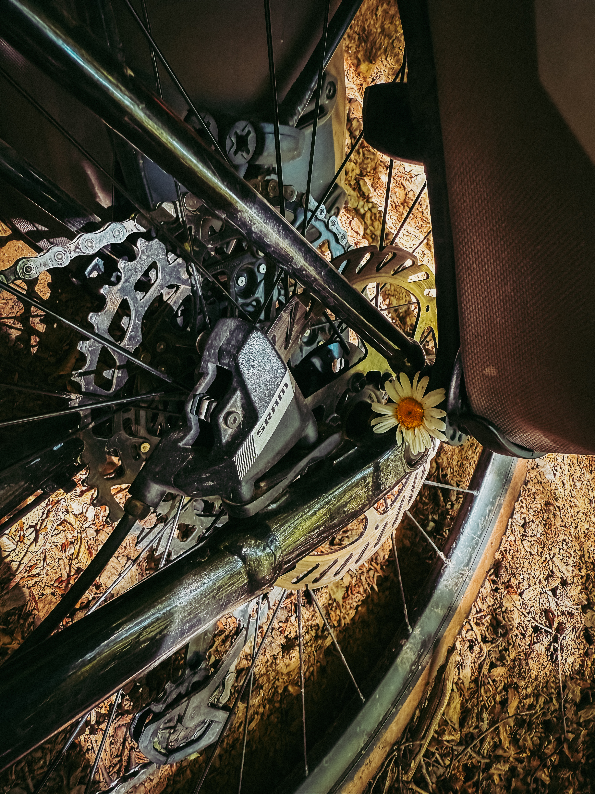

„Je konec. Už to pochop! Neotáčej se a koukej dopředu na cestu. Jinak spadneš," říkám si snad už po tisící. Vracím se vzpomínkami do svého rozpadlého vztahu s Karolínou. Do diskusí, které jsme spolu vedli, do míst a zážitků, které jsme spolu sdíleli. Probíhá mi v hlavě vnitřní dialog co všechno se mohlo stát jinak. Co jsem mohl lépe vykomunikovat, kde jsem mohl přidat, kde naopak ubrat. Doopravdy to nemohl skončit jinak?
Jedeme odlehlým Karpatským údolím Černá Sat. Je pozdní odpoledne. Slunce se nám pomalu ale jistě stáčí do zad. Jedeme po zarostlé, neutěšené lesní cestě. Tráva je zde tak vysoká, že se nám tu a tam zamotává do řetězu. Jedu několik desítek metrů před Koljou a Alise, cyklistickým párem z Německa.
Projíždím zatáčkou, když se mi na obzoru zjeví medvěd! Deset metrů ode mě si hoví hned vedle cesty pod stínem velkého smrku. V tu chvíli se v mé hlavě přestane obracet ten samý příběh stále dokola. Místo omílání těch samých vět je zničehonic ve stavu maximální pozornosti. Instinktivně brzdím a sesedám z kola. Stavím jej mezi medvěda a mě. Srdce se mi prudce rozbuší.
Medvěd se na mě podívá se stejně udiveným výrazem, jakým se dívám já na něho. Zařve. Tak zařvu i já. Bleskurychle se zvedá na všechny čtyři. Kam se teď pohne tahle masa? Místo útoku naštěstí volí útěk. Sleduji do lesa mizející hnědý kolos. Přestanu křičet a slyším jak se to ohromné a respekt budící zvíře žene lesem.

Konečně začnu vědomě dýchat. Nádech, výdech. Nádech, výdech, snažím se zklidnit svoji mysl i tělo. Kolja a Alise se zjevují zpoza zatáčky: „We heard a lot of screaming. What was that?" „There was a bear here," odpovídám se stále ještě vyděšeným výrazem. „Beer? You could have keep a bit for us too. Now I understand why were you screaming so much," reaguje Kolja se svým klasickým a vždy povzbuzujícím humorem. Už pochopil i moji obsesi dobrým pivem. Alise se na ty fórky moc netváří.
Se stále klepoucíma nohama usedám vedle cesty. Ještě před pěti minutami jsem byl hlavou všude možně, jenom né na cestě. A v momentě, kdy jsem se díval smrti do očí celý tento proces prostě zmizel. Jenom já a medvěd. Teď a tady. Minulost ani budoucnost přestaly existovat.
Snad nikdy jsem nebyl naživu více než právě teď. V momentě blízkosti mé vlastní smrtelnosti.